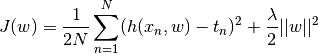
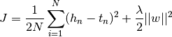
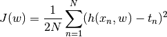

polyfit¶
Polynomial Regresssion with Ridge Regression and Batch Gradient Descent.
@author: Bhishan Poudel, Physics PhD Student, Ohio University
@date: Oct 2, 2017
@email: bhishanpdl@gmail.com
| Outputs: |
|
|---|
The cost function for the Ridge Regression is given by

In this case we use batch gradient descent method to model the training data.
-
polyfit.compute_cost_ridge(X1, t, shrinkage, w)[source]¶ Compute the cost function.

Parameters: - X1 (matrix) – Design matrix with bias column.
- t (column vector) – Target column vector.
- shrikage (float) – Shrinkage hyperparameter for Ridge L2 normalization.
- w (row vector) – Weight row vector.
Returns: Cost value.
Return type: J(float)
-
polyfit.read_data_vander(infile, M)[source]¶ Read the dataset and return vandermonde matrix Xvan for given degree M.
-
polyfit.train_norm_eqn(X, t)[source]¶ Train the data using normal equations.
This model uses OLS method to train the data without the penalty term.

Parameters: - X (array) – Design matrix of size (m+1, n). I.e. There are m features and one bias column in the matrix X.
- t (column) – target column vector
-
polyfit.train_ridge_BGD(X, t, shrinkage, iters, learning_rate)[source]¶ Calculate weight vector using Ridge Regression L2 norm using Batch Grad Desc.
Note
Note that X and t should be normalized before running batch grad descent.
Parameters: - X (matrix) – Nomalized Design matrix with bias term.
- t (column vector) – Normalized Target column vector (shape = 1, samples)
- shrikage (float) – L2 regularization shrikage hyper parameter.
- iters (int) – Number of iterations.
- learning_rate (float) – Learning rate for gradient descent algorithm.
- Return – w(row): Weight vector in the shape of row.
-
polyfit.train_ridge_BGD_threshold(X, t, shrinkage, threshold, learning_rate, stepsize)[source]¶ Calculate weight vector using Ridge Regression L2 norm using Batch Grad Desc.
Note
Note that X and t should be normalized before running batch grad descent.
Parameters: - X (matrix) – Nomalized Design matrix with bias term.
- t (column vector) – Normalized Target column vector (shape = 1, samples)
- shrikage (float) – L2 regularization shrikage hyper parameter.
- ratio (float) – Ratio of now to previous cost in grad descent calculation.
- learning_rate (float) – Learning rate for gradient descent algorithm.
- stepsize (int) – Step size of iterations to run. e.g 1 means 1,2,3,4...
- answer heavily depends on stepsize in SGD. (The) –
- Return –
w(row): Weight vector in the shape of row.
final_iter(int): Final iteration when the model converges.
J_hist(list): List of cost histories.
-
polyfit.train_ridge_SGD(X, t, shrinkage, iters, learning_rate)[source]¶ Calculate weight vector using Ridge Regression L2 norm using Batch Grad Desc.
Note
Note that X and t should be normalized before running batch grad descent.
Parameters: - X (matrix) – Nomalized Design matrix with bias term.
- t (column vector) – Normalized Target column vector (shape = 1, samples)
- shrikage (float) – L2 regularization shrikage hyper parameter.
- iters (int) – Number of iterations.
- learning_rate (float) – Learning rate for gradient descent algorithm.
- Return – w(row): Weight vector in the shape of row.
-
polyfit.train_ridge_norm_eqn(X, t, shrinkage, M)[source]¶ Train data with ridge regression using normal equations.
Parameters: - X (array) – Design matrix of size (m+1, n). I.e. There are m features and one bias column in the matrix X.
- t (column) – Target column vector.
- shrinkage (float) – The shrinkage hyperparameter for the regularization.
- M (int) – Degree of the polynomial to fit.
Returns: Weight vector in the shape of row.
Return type: w(row)